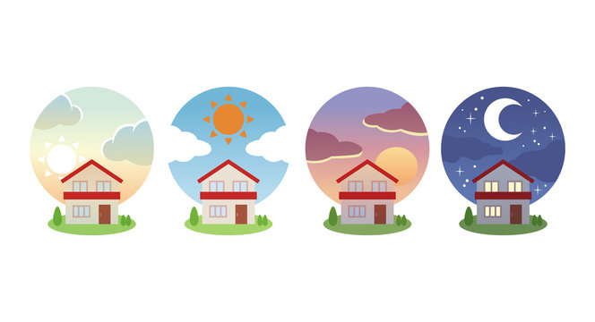

Time and Space
Welcome to our introductory guide for learning basic temporal words (day, afternoon, night), locations, and directions in Brazilian Portuguese.
Introduction
Whether you are planning a trip to Brazil, communicating with Brazilian friends, or simply expanding your linguistic skills, mastering these foundational elements of the language will serve as a crucial stepping stone. Understanding how to talk about time, places, and directions will enable you to navigate daily conversations and interactions with ease.
Time
Dia | Day
Manhã | Morning
Tarde | Afternoon
Noite | Evening / Night
Mês | Month
Ano | Year
Bom dia! | Good morning!
Boa tarde! | Good afternoon!
Boa noite! | Good night!
Place
Onde | Where
Aqui | Here
Lá | There
Onde vai ser?
Where is it going to be?
Aqui, no Rio de Janeiro e lá em São Paulo
Here, in Rio de Janeiro and there in São Paulo
Por que escolheram esses locais?
Why did they choose these locations?
Deve ser porque são cidades grandes
It must be because they are big cities
Yes, the “por que, porque (why/because)” has more than one form, but it is not necessary to know that now. But if you're curious, it's a good way to research and delve deeper into the language.
Directions
Direita | Right
Esquerda | Left
Cima | Up
Baixo | Down
Wow! A lot of content was taught at once, but it was important to consolidate your knowledge of the language. Now you can understand a little more about the Portuguese language, congratulations!